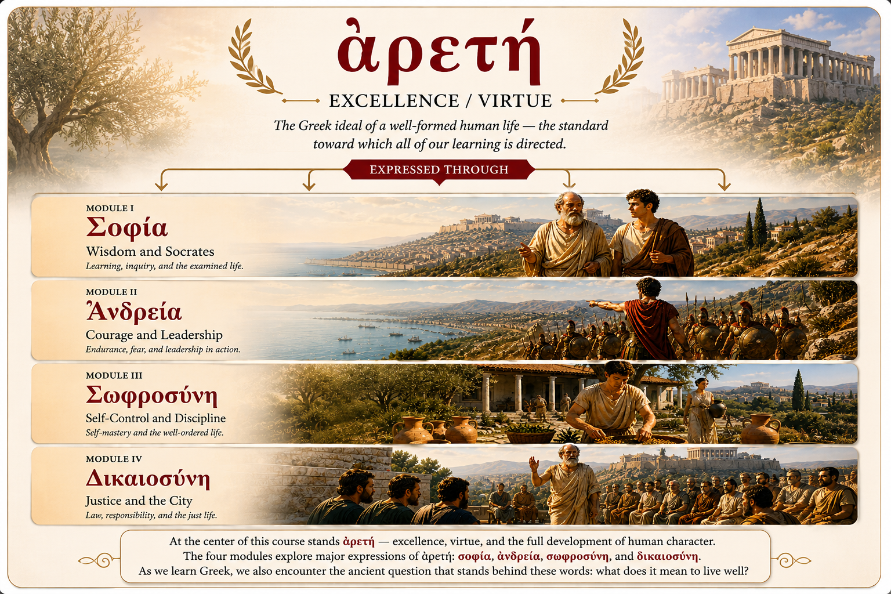

Before Lesson 0 begins, take a moment to see the path ahead: Greek as a
living doorway into Socrates, Xenophon, Athens, memory, argument, history,
friendship, courage, justice, and the ancient conversation about how to
live well.
Ξ
Part 1 — Introduction to the Course
Why Learn Greek with Xenophon?
Language, Character, and the Ancient Greek World
Ancient Greek is not merely a set of forms to memorize. It is a language
that lets you enter a real ancient world: a world of students and teachers,
public debate, military crisis, household order, friendship, political
judgment, and searching questions about what a good human life can be.
In this course, you will learn Greek through readings inspired by or drawn
from Xenophon, especially his portraits of Socrates and his accounts of
leadership, discipline, courage, justice, friendship, education, and
practical wisdom. Xenophon is a generous companion for beginners because
his prose is often clear, orderly, direct, and attached to recognizable
human situations. His sentences lead you into grammar, but they also lead
you into choices, actions, and character.
As the course unfolds, we will return again and again to Greek words that
name more than vocabulary items. They name habits of attention and ways of
living that mattered deeply to Greek writers:

These words will become familiar not as labels in a list, but as recurring
questions in Greek: What is wisdom? What does courage look like? How does
self-control shape action? What is justice? What kind of excellence is
worthy of a human being?
The Dashboard is the first place to go when you begin a study session.
It shows where you are in the course, your current lesson, progress,
review items, practice links, and the next step to take.
Use the Left Navigation Panel
Dashboard — return here to resume study and see progress.
Lessons — view course modules and open lesson pages.
Flashcards — review vocabulary from lessons already reached.
Maps — explore the Greek world connected to Xenophon, Socrates, Athens, and the readings.
Profile — view progress and account information.
Feedback — report problems, confusing explanations, broken links, or suggestions.
Follow the Lesson Path
Page 1 — Reading and Vocabulary
Begin with the Greek passage, vocabulary, and glosses. Read slowly and notice repeated words and forms.
Page 2 — Language Study
Study word building, grammar, examples, and practice exercises that explain how the Greek is working.
Page 3 — Greek World / Culture / Review
Connect the language to Xenophon, Greek history, culture, ethics, or geography, then proceed to the lesson quiz.
Practice, Review, and Mastery
Practice is not merely testing. It is part of learning. Read feedback
carefully, especially after a mistake. Mistakes show what to review next.
Final lesson quizzes and mastery checks confirm that you are ready to
move forward.
Flashcards and Daily Memory
Flashcards draw from the same vocabulary data used in the lessons. Use
short daily review sessions rather than rare long cram sessions. Greek
memory grows best by returning often.
Typing Greek with the Pop-up Keyboard
When you need to type Greek, use the Show Keyboard button
beside an answer field. The keyboard lets you enter Greek letters,
accents, breathings, iota subscript, punctuation, spaces, and backspace
without changing your system keyboard. Some keys correspond to your
physical keyboard, and you can choose diacritical marks before typing a
vowel.
Try It Now
Practice Typing Greek
Before beginning Lesson 0, try typing this sentence with the pop-up Greek
keyboard. This practice does not affect your progress.